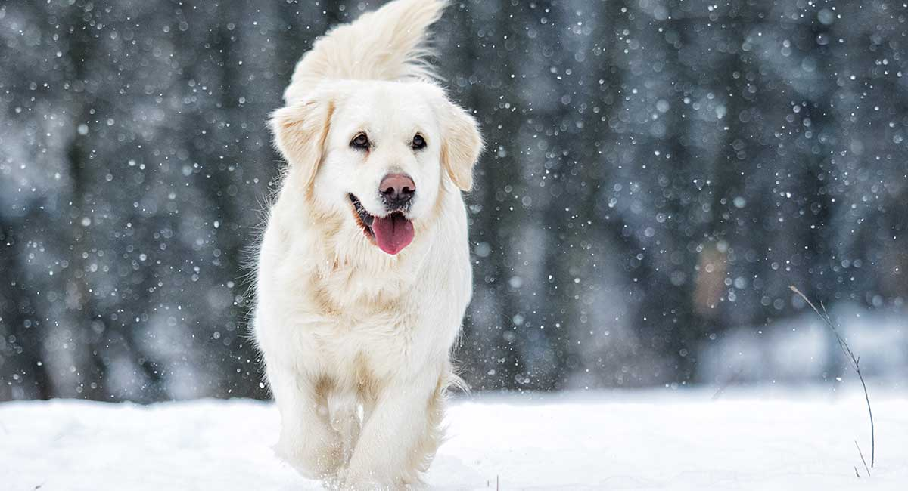
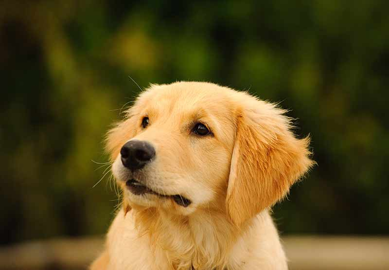
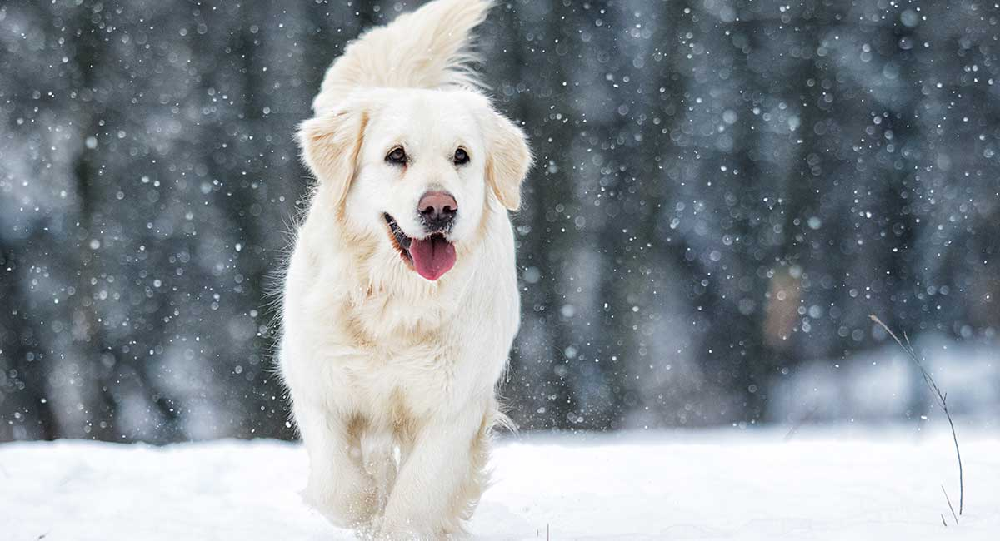
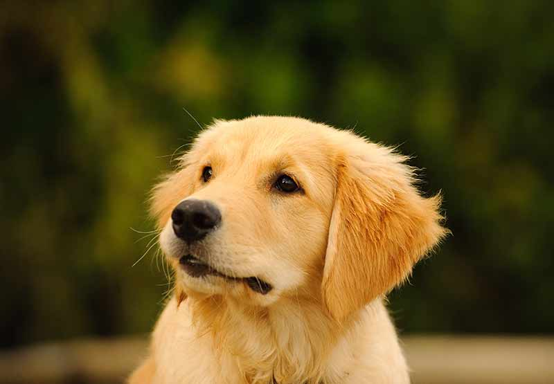
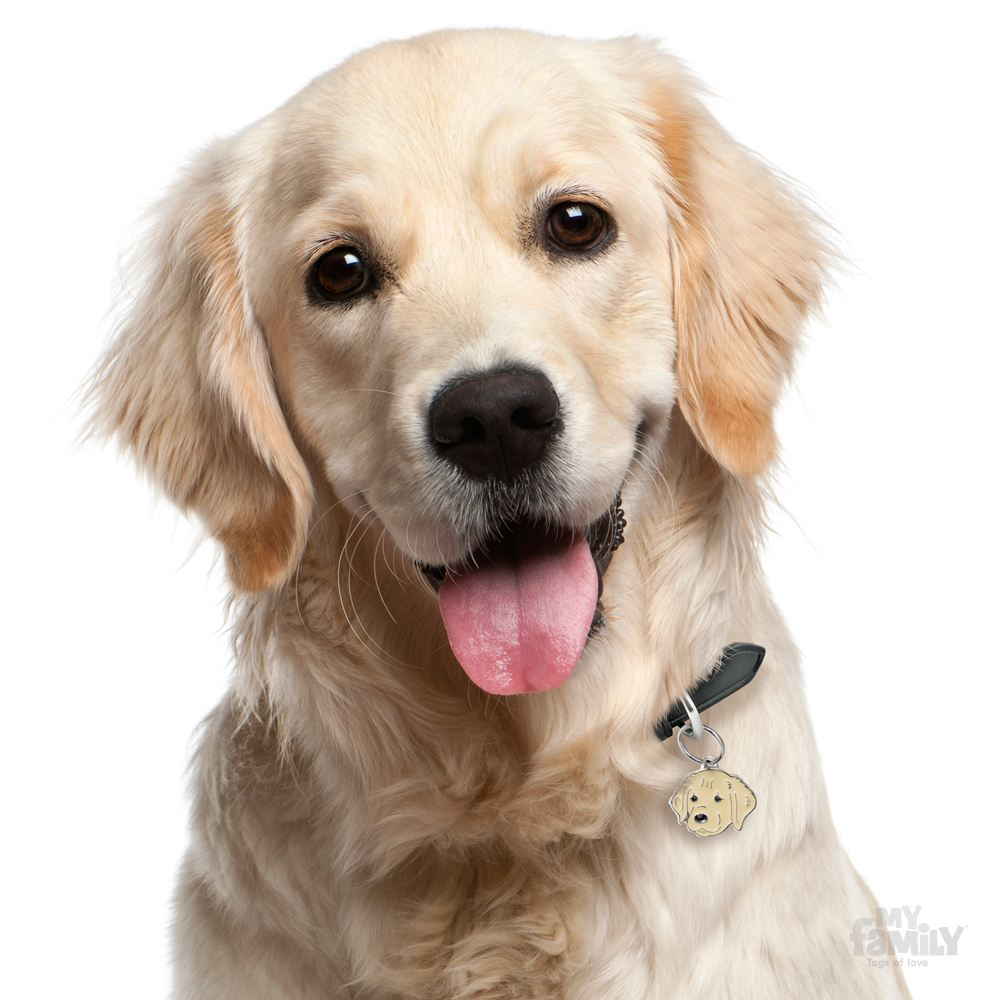
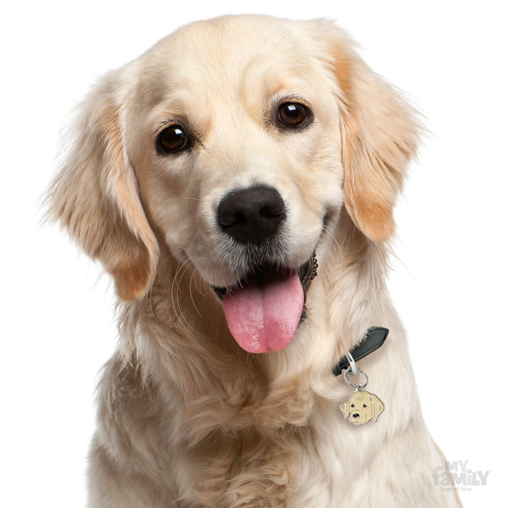

 

The adoption procedure is simple and free of charge. Prospective owners need to come to the shelter 2 times and there is an adoption contract to sign.
For the first visit we have a questionnaire – regarding your experience as a dog-owner, the living conditions the dog will have and etc. We will ask some questions about your life and suggest dogs that might be the right match.
You are welcome to spend as much time with the dogs as necessary to make the right choice. There is a reason we ask you to come twice – often the emotional decision made at the shelter can be different from the thought-through decision you’d make in the comfort of your own home and after a discussion with your family.
When you are approved for adoption, you are welcome for your second visit – it can be done even on the next day. You can sign the adoption contract, receive the documents and medical history of your new friend and go home together.
We are very happy to keep in touch and help out in any way we can in the future. A member of our team might come to visit you at your home after an appointment. To support you, our adopted dogs are treated at very low-fare prices at the Franziska clinic for the rest of their lives.
We have made sure that each of our dogs go home with:
1. a full set of vaccine shots;
2.a microchip and registration in the national database;
3.an EU passport;
4. spayed/neutered.
The adoption of a dog from the Farm shelter is free of charge. However, the Farm is a non-profit funded by small donations – we appreciate any help as it is a struggle every day.
Additional regulations:
You need to be over 18 y.o. to adopt from us;
We only rehome dogs with people we have met personally, we do not ship;
We have a right to reject a candidate based on the interview and our experience;
We do not re-home puppies and young dogs with elderly people;
We do not re-home puppies or friendly animals as guard-dogs;
People who have already adopted from us do not need to go through the procedure a second time.